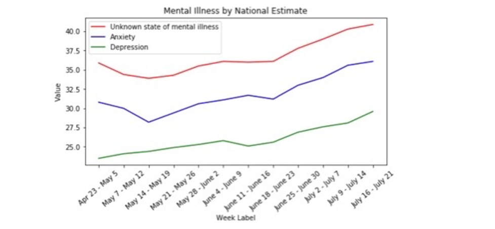

Covid-19 has thrown your life into a whirlwind. Nationally, Covid has caused 15.2 million
Et harum quidem rerum facilis est et expedita distinctio. Nam libero tempore, cum soluta nobis est eligendi optio cumque nihil impedit quo minus id quod maxime placeat facere possimus, omnis voluptas assumenda est, omnis dolor repellendus. Temporibus autem quibusdam et aut officiis debitis aut rerum necessitatibus saepe eveniet ut et voluptates repudiandae sint et molestiae non recusandae. Itaque earum rerum hic tenetur a sapiente delectus, ut aut reiciendis voluptatibus maiores alias consequatur aut perferendis doloribus asperiores repellat.
Ut enim ad minima veniam, quis nostrum exercitationem ullam corporis suscipit laboriosam, nisi ut aliquid ex ea commodi consequatur? Quis autem vel eum iure reprehenderit qui in ea voluptate velit esse quam nihil molestiae consequatur, vel illum qui dolorem eum fugiat quo voluptas nulla pariatur?
At vero eos et accusamus et iusto odio dignissimos ducimus qui blanditiis praesentium voluptatum deleniti atque corrupti quos dolores et quas molestias excepturi sint occaecati cupiditate non provident, similique sunt in culpa qui officia deserunt mollitia animi, id est laborum et dolorum fuga.
These predictions do not describe saner climes. Mental Health America (MHA) posts 1.5 million individuals have participated in the mental health screening between January 2020 to September 2020. Amongst those screened are co-workers and friends who display big grins at any instance to hide hidden battles.
According to the Center for Disease Control and Prevention(CDC), organizations want to keep the mental health of their workforce in check for;
Gingerly analyzing the role of organizations in regard to the mental health of their workforce; I ponder to what extent organizations can be held accountable for the mental health of their employees.
As humans, we despise anything that deteriorates the state of our well-being thereby affecting our mental health. Well-being differs amongst individuals and it ranges from health to happiness, prosperity, and welfare.
The pandemic is a disruptive agent in the lives of basically every inhabitant on this planet. Lives and jobs were lost, economies boomeranged, it struck leaving almost no positivity to talk about except for the capitalistic powerhouses. These are strong attributes to the surge of mental issues as reported by MHA, but will the demise of the pandemic cause an improvement in the well-being of the populace? Forecasting such a report will be a tedious one due to the ubiquitous nature of viruses and the unprecedented nature of the pandemic. Another challenge will be the disparity of occurrence amongst certain demographics.
Utilizing the April 23 - July 21 Mental Health Data from the CDC with indicators such as anxiety and depression, the trajectory of mental illness during the pandemic was analyzed below:
The significant dips at certain periods in May and June show there might be a strong correlation between pandemic and mental health. The disbursal of the stimulus check to almost every household in the United States, the proposal of hydroxyl chloroquine, and the relief of a change of work pattern amongst others are factors that can be attributed to this dip.
The dip will only last for a short time though because the government will not empty its treasury to continuously give palliatives to the populace. Sooner or later, people will also have to go back to their work routine thereby providing short-term solutions.
Things may have opened back up and wearing a face-covering might have become the new norm, but there is still an unprecedented growing number of cases that suggests a likely increase in mental issues. The University of California at Berkeley also report a mental health issues have soared amongst US graduates. These are potential candidates that organizations look forward to integrating into the workforce. The question then is what role can organizations play in the mental health and wellbeing of their employees as we move forward during this pandemic and after?
Organizations may attempt to tackle this problem through the provision of above-median earned salaries, offering a good working environment, retirement, and other benefits. However, all these do not guarantee strong mental health. In cases where an employee suffers from anxiety or depression that stem from activities beyond the workplace, how do organizations handle this? Are organizations supposed to also teach financial literacy which in the long run leads to prosperity? Would it be wise for employees to entrust their organizations with the task to provide happiness?
In this era of customer centrism, organizations seem to prioritize customer/client welfare before its employees, understandably so. However, the current climate has highlighted the need for synergy in both consumer satisfaction and employee wellness. Combating the effect of mental health in the workforce will vary by organization sizes but organizations that are ignorant or defiant to the mental health of its workforce would be doing so to their detriment. Some organizations have become more innovative and are introducing mental health programs to enable employees to become more adaptable. Methodologies and cultures that can foster interpersonal relationships beyond work amongst employees should be encouraged, zero-tolerance against narcissism and bullying, and open room policies where employees can voice their concerns should be readily available. Ultimately, my suggestion is that employees should prioritize their well-being and not be afraid to ask for help when needed. As Simon Sinek so eloquently put it "Followers want to be taken care of. Leaders want to take care of others. Be the leader you wish you had." Take initiative!